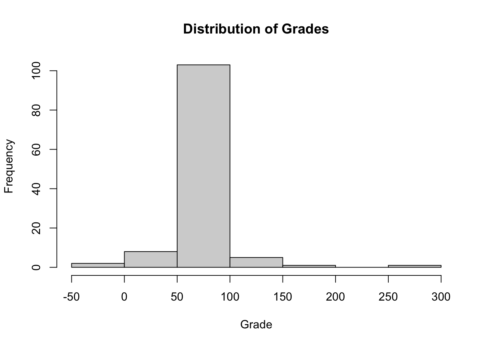
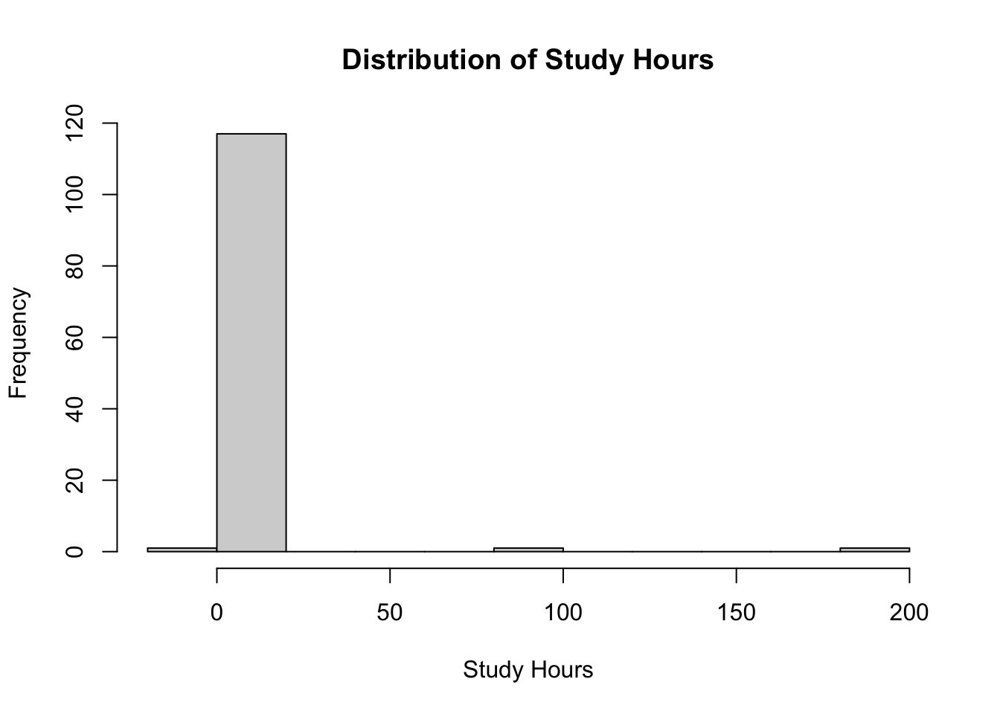

library(dplyr)
Attaching package: 'dplyr'The following objects are masked from 'package:stats':
filter, lagThe following objects are masked from 'package:base':
intersect, setdiff, setequal, unionlibrary(ggplot2)library(dplyr)
Attaching package: 'dplyr'The following objects are masked from 'package:stats':
filter, lagThe following objects are masked from 'package:base':
intersect, setdiff, setequal, unionlibrary(ggplot2)data <- read.csv("../data/student_registrations.csv")
head(data, 10) student_id age gender course grade study_hours enrol_date
1 S001 21 female ai 71 6 2023-11-24
2 S002 200 female cybersecurity 60 8 2023-02-27
3 S003 24 Male Cybersecurity 102 8
4 S004 23 M cybersecurity -1 8 2023-05-21
5 S005 19 Male Cybersecurity 40 7 2023-05-06
6 S006 19 F cybersecurity 73 8 2023-04-25
7 S007 18 female AI 60 11 2023-03-13
8 S008 25 female ai 83 11 2023-02-22
9 S009 23 M Data Science 58 10 2023-12-13
10 S010 24 F Cybersecurity 68 9 2023-10-07
attendance_rate assignments_submitted satisfaction_level
1 85 3 NA
2 85 1 4
3 87 10 2
4 84 4 4
5 79 0 1
6 NA 2 1
7 85 5 3
8 80 10 3
9 78 2 4
10 86 3 4str(data)'data.frame': 120 obs. of 10 variables:
$ student_id : chr "S001" "S002" "S003" "S004" ...
$ age : int 21 200 24 23 19 19 18 25 23 24 ...
$ gender : chr "female" "female" "Male" "M" ...
$ course : chr "ai" "cybersecurity" "Cybersecurity" "cybersecurity" ...
$ grade : int 71 60 102 -1 40 73 60 83 58 68 ...
$ study_hours : int 6 8 8 8 7 8 11 11 10 9 ...
$ enrol_date : chr "2023-11-24" "2023-02-27" "" "2023-05-21" ...
$ attendance_rate : num 85 85 87 84 79 NA 85 80 78 86 ...
$ assignments_submitted: int 3 1 10 4 0 2 5 10 2 3 ...
$ satisfaction_level : int NA 4 2 4 1 1 3 3 4 4 ...nrow(data)[1] 120ncol(data)[1] 10names(data) [1] "student_id" "age" "gender"
[4] "course" "grade" "study_hours"
[7] "enrol_date" "attendance_rate" "assignments_submitted"
[10] "satisfaction_level" summary(data) student_id age gender course
Length:120 Min. : -5.00 Length:120 Length:120
Class :character 1st Qu.: 19.00 Class :character Class :character
Mode :character Median : 21.00 Mode :character Mode :character
Mean : 28.91
3rd Qu.: 24.00
Max. :200.00
NA's :7
grade study_hours enrol_date attendance_rate
Min. : -1.00 Min. :-10.00 Length:120 Min. :-20.00
1st Qu.: 60.00 1st Qu.: 8.00 Class :character 1st Qu.: 78.00
Median : 70.50 Median : 10.00 Mode :character Median : 85.00
Mean : 72.38 Mean : 12.16 Mean : 84.22
3rd Qu.: 80.25 3rd Qu.: 12.00 3rd Qu.: 91.00
Max. :300.00 Max. :200.00 Max. :150.00
NA's :1
assignments_submitted satisfaction_level
Min. : 0.000 Min. :1.000
1st Qu.: 1.000 1st Qu.:2.000
Median : 3.000 Median :3.000
Mean : 2.761 Mean :3.088
3rd Qu.: 4.000 3rd Qu.:4.000
Max. :10.000 Max. :5.000
NA's :7 NA's :6 mean(data$grade, na.rm = TRUE)[1] 72.375median(data$study_hours, na.rm = TRUE)[1] 10table(data$gender)
? F female Female M male Male
4 5 18 13 22 24 9 25 table(data$course)
ai AI cybersecurity Cybersecurity data science
15 10 17 14 18
Data Science maths Maths
14 15 17 colSums(is.na(data)) student_id age gender
0 7 0
course grade study_hours
0 0 0
enrol_date attendance_rate assignments_submitted
0 1 7
satisfaction_level
6 data[data$grade < 0 | data$grade > 100, ] student_id age gender course grade study_hours enrol_date
3 S003 24 Male Cybersecurity 102 8
4 S004 23 M cybersecurity -1 8 2023-05-21
21 S021 23 Maths 102 11 2023-01-14
53 S053 NA F Data Science 102 10 2023-07-13
66 S066 22 Female maths 200 7 2023-04-27
82 S082 23 M AI 300 11 2023-12-26
92 S092 24 Female AI 101 7 2023-08-25
100 S100 18 female data science 105 12 2023-06-16
attendance_rate assignments_submitted satisfaction_level
3 87 10 2
4 84 4 4
21 74 1 4
53 64 1 4
66 68 3 3
82 95 5 2
92 77 0 1
100 111 4 2data[data$attendance_rate < 0 | data$attendance_rate > 100, ] student_id age gender course grade study_hours enrol_date
NA <NA> NA <NA> <NA> NA NA <NA>
11 S011 18 F maths 78 14 2023-02-14
22 S022 19 Male Cybersecurity 85 10 2023-10-15
52 S052 24 M maths 51 13 2023-03-05
54 S054 NA Male Data Science 41 11 2023-02-10
83 S083 20 M Maths 90 9 2023-12-16
84 S084 18 female Maths 70 13 2023-11-28
100 S100 18 female data science 105 12 2023-06-16
107 S107 21 cybersecurity 76 6 2023-02-03
112 S112 19 F maths 62 6 2023-12-02
114 S114 25 F ai 73 200 2023-07-22
attendance_rate assignments_submitted satisfaction_level
NA NA NA NA
11 150 1 3
22 103 4 4
52 103 2 5
54 102 3 4
83 102 0 3
84 -20 4 4
100 111 4 2
107 111 10 3
112 103 1 3
114 103 0 1data[data$study_hours < 0 | data$study_hours > 80, ] student_id age gender course grade study_hours enrol_date
27 S027 19 Female maths 77 100 2023-08-03
114 S114 25 F ai 73 200 2023-07-22
120 S120 22 M cybersecurity 92 -10 2023-05-07
attendance_rate assignments_submitted satisfaction_level
27 80 10 5
114 103 0 1
120 69 NA 3unique(data$gender)[1] "female" "Male" "M" "F" "?" "male" "" "Female"unique(data$course)[1] "ai" "cybersecurity" "Cybersecurity" "AI"
[5] "Data Science" "maths" "Maths" "data science" invalid_dates <- data[!grepl("^\\d{4}-\\d{2}-\\d{2}$", data$enrol_date), "enrol_date"]
unique(invalid_dates)[1] "" "abcd" "2023/99/12"hist(data$grade, main="Distribution of Grades", xlab="Grade")
hist(data$study_hours, main="Distribution of Study Hours", xlab="Study Hours")